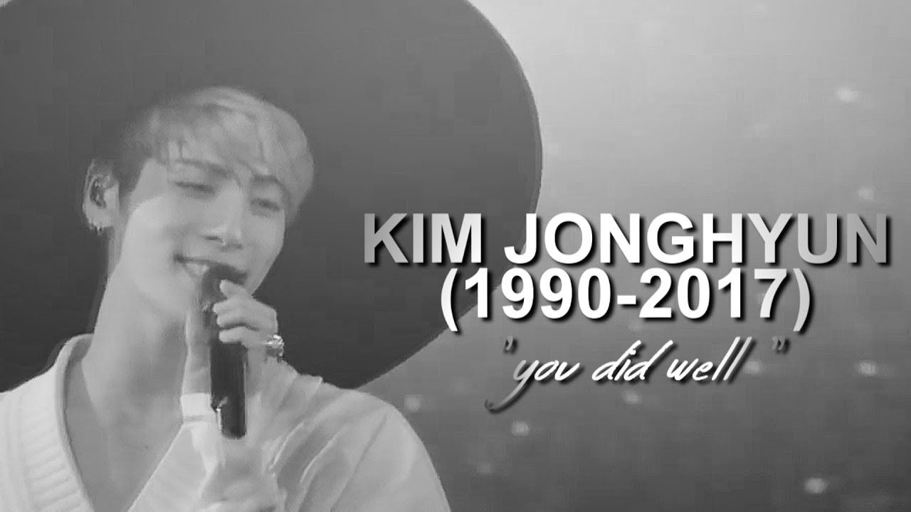

-
Jonghyun permaneceu em sua carreira musical como vocalista principal do grupo SHINee e como artista solo até sua morte, em 18 de Dezembro de 2017, quando ele cometeu suicídio através de envenenamento por monóxido de carbono.
-
Jonghyun foi o primeiro artista a participar de forma significante na escrita, organização e composição de um álbum na SM Entertainment, uma companhia conhecida na industria Kpop por limitar o controle de seus artistas sobre a produção de seus álbuns.
-
O estilo musical de Jonghyun foi considerado como sendo único e foi enaltecido por escrever e compor a maioria de suas músicas solo. Insight Korea o mencionou como um dos sete ídolos em grupos de kpop que parecem ter "nascido para fazer música".
-
Seu último álbum solo, Poet | Artist, foi lançado após sua morte, em 23 de Janeiro de 2018. Foi anunciado, antes do lançamento, que todos os lucros do álbum seriam dados à mãe de Jonghyun e utilizados para começar uma fundação de caridade. Em Setembro de 2018, a Fundação Shinin foi estabelecida pela família de Jonghyun para ajudar jovens artistas lutando contra a depressão.
Kim Jong Hyun (1990-2017)
Cantor, compositor, produtor, apresentador de rádio e autor

Discografia SHINee
- Replay
- The Shinee World
- Amigo
- Romeo
- 2009, Year Of Us
- Lucifer
- Hello
- Replay [Japanese]
- Juliette [Japanese]
- Lucifer [Japanese]
- The First
- Sherlock
- Sherlock [Japanese]
- Dazzling Girl
- Dream Girl: The Misconceptions of You
- Fire
- Why So Serious? - The Misconceptions of Me
- Boys Meet U
- The Misconceptions of Us
- Boys Meet U [Japanese]
- Everybody
- 3 2 1 [Japanese]
- SHINee WORLD Ⅱ in Seoul
- Lucky Star
- I'm Your Boy
- SHINee WORLD III in SEOUL
- Your Number
- Odd
- Married To The Music
- Sing Your Song
- DxDxD
- 1 Of 1
- 1 And 1 - 5th Album Repackage CD 1 and 2
- Winter Wonderland
- Five
Discografia solo
- Base
- Story Op.1
- She Is
- Inspiration
- Story Op.2
- Poet | Artist